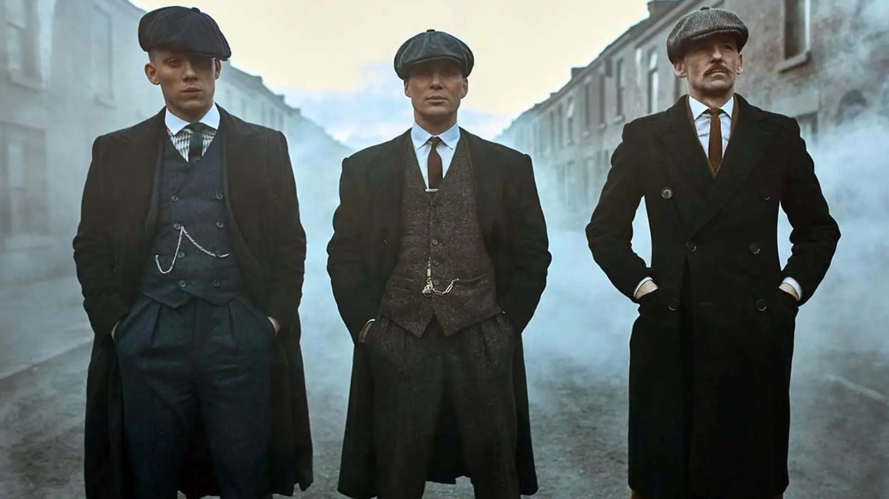

De Steven Knight
Peaky Blinders es una serie dramática británica que sigue a la familia Shelby, una familia de gánsteres que opera en Birmingham, Inglaterra, durante el período de entreguerras. La historia está centrada en Thomas Shelby, el líder de la banda, interpretado por Cillian Murphy. La serie combina hechos históricos con ficción, mostrando el ascenso de los Shelby desde ser una pequeña banda de delincuentes a convertirse en una poderosa organización criminal con conexiones políticas.